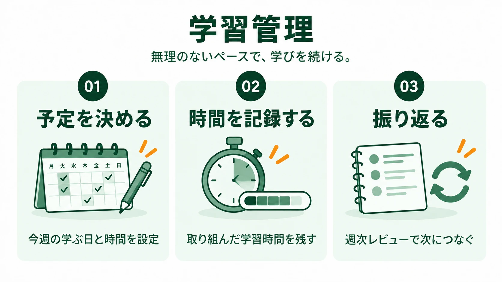
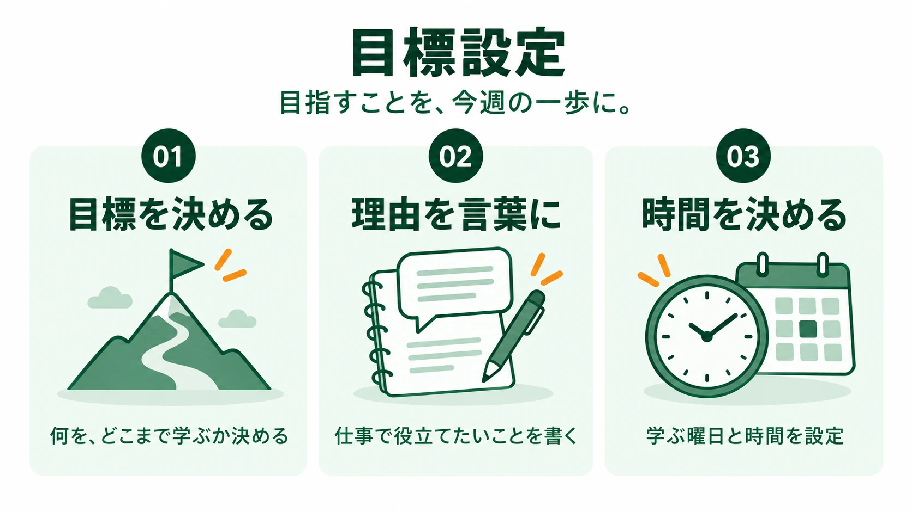
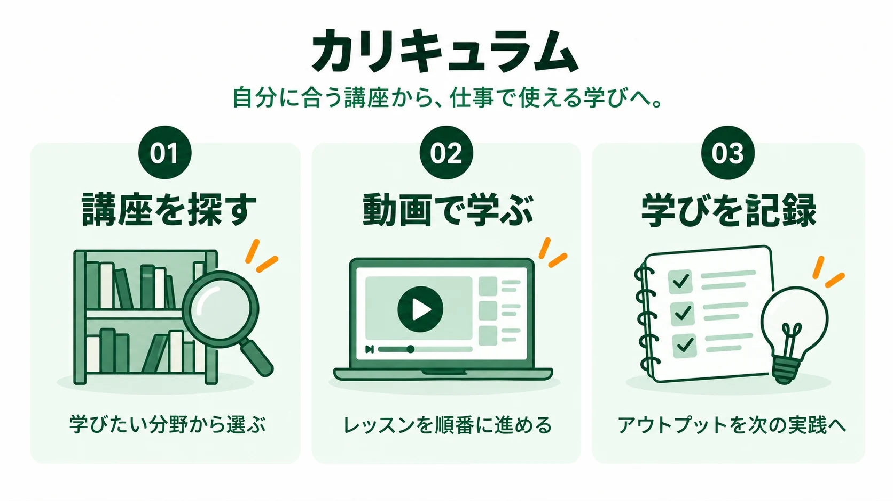
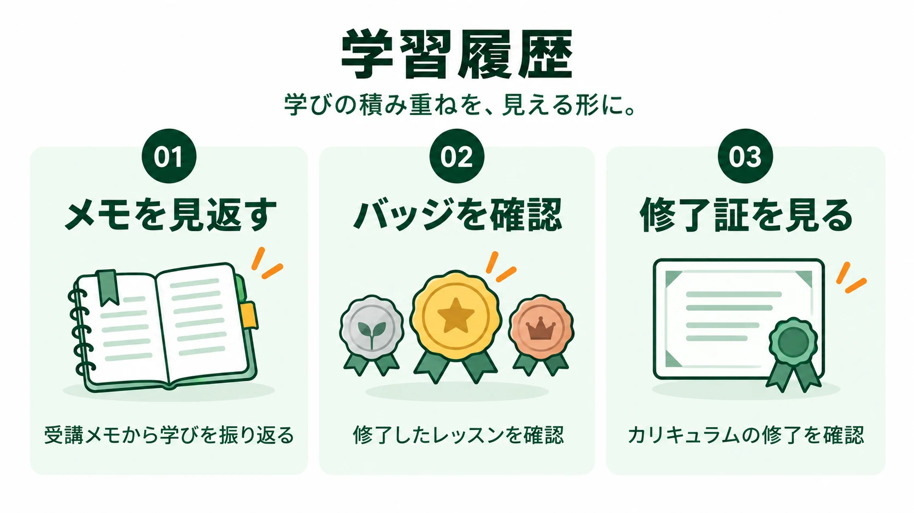

今週の目標
まだ目標は設定されていません。下の欄から今週の目標を決めましょう。
TOTONOE IROHA

YOUR PROGRESS
無理のない予定を決め、学習時間を記録しましょう。週次レビューは取り組みたいときに開けます。
今週はここまででも大丈夫。未完了は来週へ移せます。
PLANNED / ACTUAL
記録すると、ここに学習日と時間が表示されます。

YOUR GOAL
目指すことを言葉にし、今週の時間と次の行動に結びつけます。
まだ目標は設定されていません。下の欄から今週の目標を決めましょう。
1週間の時間と学ぶ曜日を決めます。
1週間の総学習時間を決める
取り組む曜日を2〜3日選ぶ
曜日ごとの時間を配分する
設定内容は現在このブラウザ内に保存されます。別の端末との同期はまだありません。

LEARN YOUR WAY
学習中の講座から続けるか、分野を選んで新しい講座を探しましょう。
CONTINUE LEARNING
選んだ分野の講座とレッスンを確認できます。
公開中のカリキュラムを表示します。
選択中のカリキュラム
レッスンと進捗をここに表示します。
分野とカリキュラムを選ぶと、レッスンを確認できます。

保存したメモをここで見返せます。
YOUR ACHIEVEMENTS
公開済みレッスンの修了バッジと、カリキュラムの修了証を確認できます。
動画を確認し、学んだことを記録したレッスンのバッジを表示します。
まだ修了したレッスンはありません。カリキュラムから学習を始めましょう。
同じカリキュラムの公開済みレッスンをすべて修了すると、このブラウザ内に修了証が保存されます。
まだ修了証はありません。公開済みレッスンの準備状況はカリキュラムから確認できます。
バッジ・修了証は現時点ではブラウザ内のプレビュー記録です。別端末との同期や公式な修了証の発行には対応していません。

MEMBER SEMINARS
無料セミナーも有料セミナーも、開催情報と会員向けの参加条件をここで確認できます。
※ 対象の有料セミナーには会員向けの申込方法を個別にご案内します。外部の申込ページに表示される一般料金・参加条件とは異なる場合があります。

過去回のアーカイブをその場で開いて振り返れます。
音声で過去回を振り返れます。
PAID
現在ご案内できる有料セミナーはありません。公開され次第、参加条件とともにここへ掲載します。
FREE
現在ご案内できる無料セミナーはありません。